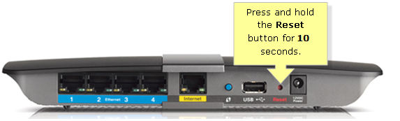

Depending on you're router almost every router is dynamic which means it will allow you to change your IP-address.
First thing to do is check if you have a ipv6 and if you don't this will work. Or if you have one you will need to change your IP-address in your router settings.
To get to you're router settings you will need to go to your cmd/command prompt and type ipconfig and you will see Default Gateway And then type your default Gateway in your web-browser and if it ask for a password and username try username:admin and password:admin That's the default password and username but if that does not work you need to go to the back of your router and find the username and password and then type it into your computer.
I don't know what router you have so once you're logged into your router you will need to look up on the internet how to change your IP-address with your Pacific router.
So if you don't have ipv6 and know you can do this you will need to go to the back of you're router and hold down the red button in your router for 10-Seconds. After you do this your internet will turn off intell it turns back on which it would turn back on in 1 or 2minutes. After that look up what is my ip and see if it changed if it didn't you did something or do not have a dynamic router.
To see how you have a dynamic router go to cmd and type ipconfig/all and if DHCP is enabled you have a dynamic router.

How can this help?
Changing you're ip address can help prevent ddos attacks.
If someone has your old IP-address and they ddos you it's going to do nothing because know ones router is assigned to that IP-address.